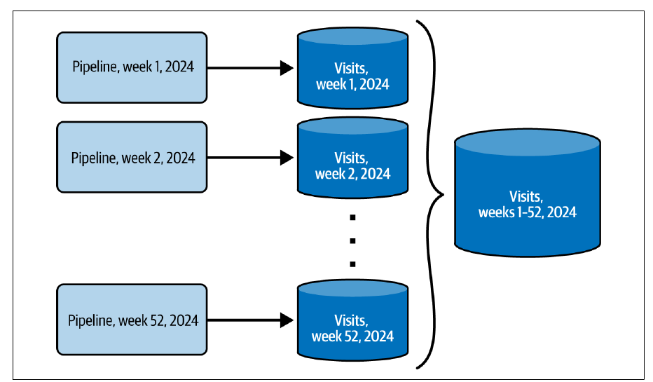

Chapter 4 · pp. 79–114
Idempotency Design Patterns
Data Engineering Design Patterns, 1st Edition
Automatic retries are great engineering and a data consistency hazard: a retried task can replay writes that already succeeded, creating duplicates — the best case, since the worst is duplicates nobody can recognize. Idempotency, like absolute(-1) == absolute(absolute(-1)), means any number of runs gives the same output, or at least clearly identifiable duplicates. The chapter's seven patterns come in four families. Overwriting: the Fast Metadata Cleaner replaces slow DELETEs with TRUNCATE/DROP on physically separate tables behind a view, and Data Overwrite replaces data files with INSERT OVERWRITE or a save mode. Updates: the Merger applies incremental changes with MERGE, and the Stateful Merger adds a version state table so backfills restore the table first. Database: Keyed Idempotency derives keys from immutable attributes such as append time, and the Transactional Writer exposes only committed data. Immutable dataset: the Proxy writes each version once and exposes the latest through a view or manifest.
The chapter’s own outline (from the book’s table of contents)
- Overwriting — p. 80
- Pattern: Fast Metadata Cleaner — p. 80
- Pattern: Data Overwrite — p. 86
- Updates — p. 89
- Pattern: Merger — p. 89
- Pattern: Stateful Merger — p. 94
- Database — p. 100
- Pattern: Keyed Idempotency — p. 100
- Pattern: Transactional Writer — p. 105
- Immutable Dataset — p. 110
- Pattern: Proxy — p. 110
- Summary — p. 113
From the book
Introduction
Error management patterns handle most issues, not all: automatic retries of a task or job can replay writes that already succeeded. Duplicates you can remove on the consumer side are the best case; duplicates you can't even recognize are the nightmare (p. 79). Idempotency, defined with the absolute function, means any number of runs gives consistent output without duplicates — or with clearly identifiable ones, since a messaging system without transactional producers can still duplicate on retry (pp. 79–80). The author credits Maxime Beauchemin's 2018 article “Functional Data Engineering: A Modern Paradigm for Batch Data Processing” with popularizing idempotency (p. 80).
flowchart TD
Q{"What do you write?"}
Q -->|"Whole dataset each run"| OV["Overwriting"]
OV -->|"metadata ops available"| FMC["Fast Metadata Cleaner<br/>TRUNCATE / DROP + view"]
OV -->|"object store, no metadata layer"| DO["Data Overwrite<br/>INSERT OVERWRITE, save mode"]
Q -->|"Incremental changes"| UP["Updates"]
UP --> M["Merger (MERGE)"]
UP -->|"backfills must be consistent"| SM["Stateful Merger<br/>+ version state table"]
Q -->|"Streaming / no orchestrator"| DB["Database"]
DB --> KI["Keyed Idempotency"]
DB --> TW["Transactional Writer"]
Q -->|"Must never modify written data"| P["Proxy<br/>write-once tables + view"]The vault's decision map of the chapter's patterns, following the book's summary (pp. 113–114).
From the book
Overwriting
Deleting existing data before writing is the easiest approach but can be compute-intensive on big datasets; data- or metadata-based solutions exist (p. 80).
Overwriting
Pattern: Fast Metadata Cleaner
pp. 80–86Problem. A daily batch processes 500 GB to 1.5 TB of visits; for idempotency it first DELETEs rows from the previous run, then INSERTs. After three weeks, the growing table makes DELETE very slow (p. 80).
Solution (pp. 81–83). DELETE is a two-step action — find the rows, then rewrite the affected files. TRUNCATE TABLE and DROP TABLE are metadata operations (no table scan). Treat the dataset as many physically separate tables forming one logical unit behind a view — e.g. 52 weekly tables composing a yearly visits dataset (Figure 4-1). The partitioning defines the idempotency granularity (here one week). The orchestration then:
- Decides from the execution date whether to start a new granularity (e.g. Exclusive Choice, Ch. 6: Monday → initialization branch).
- Creates the idempotency environment: create-then-
TRUNCATE, orDROP-then-create. - Updates the single abstraction (a view unioning the weekly tables); with
DROP, optionally remove the table from the view first so readers don't hit errors.


flowchart LR
D{"Execution day<br/>= Monday<br/>or 1 January?"} -- yes --> C["create_weekly_table<br/>(or TRUNCATE/DROP)"] --> V["recreate view visits<br/>= UNION of weeks"] --> L["load day into week table"]
D -- no --> LAfter Figure 4-2 and Examples 4-1/4-2 (pp. 83, 85). For fully loaded tables, re-create the table at each load (Figure 4-3) or use Data Overwrite (p. 83).
Consequences (pp. 84–85):
| Granularity = backfill boundary | Backfilling one day of a weekly table means rerunning from the table-creation task for the whole week (other days only need their load step). No fine-grained backfills per provider, user or customer |
| Metadata limits | BigQuery: 4,000 partitions; Redshift: 200,000 tables — reached quickly across pipelines. Add a freezing step that merges immutable weekly tables into monthly or yearly ones |
| Support | Needs metadata operations: warehouses, lakehouses, relational databases — hard on plain object stores |
| Data exposition | Users want one entry point — a view or similar logical structure |
| Schema evolution | A new optional field needs a separate pipeline to alter existing tables; a new required field can come with reprocessing |
Examples (pp. 85–86): an Airflow BranchPythonOperator returning create_weekly_table when day_of_week == 1 or day_of_year == 1, else a dummy task; a PostgresOperator creates the week-suffixed table and a custom PostgresViewManagerOperator refreshes the visits view.
Overwriting
Pattern: Data Overwrite
pp. 86–88Problem. A daily job on event-time-partitioned visits in an object store creates duplicates on every backfill; there's no metadata layer for the Fast Metadata Cleaner (p. 86).
Solution (pp. 86–87):
| Layer | How |
|---|---|
| Processing framework | Spark save mode, Flink write mode; Delta Lake replaceWhere for selective overwrite |
| SQL | DELETE FROM + INSERT INTO (can target rows); INSERT OVERWRITE (concise, whole table/partition only); load commands with overwrite, e.g. BigQuery LOAD DATA OVERWRITE, or TRUNCATE first |
INSERT can take a SELECT instead of explicit values: INSERT INTO visits (id, v_time) SELECT visit_id, visit_time FROM visits_raw (p. 87). With time travel stores (table file formats, BigQuery, Snowflake) overwritten blocks remain until the retention period ends or a vacuum runs (p. 87).
Consequences (pp. 87–88): data overhead — big unpartitioned datasets get slower to overwrite every day (partition them, Ch. 8); vacuum need — deleted blocks stay on disk in table formats and relational databases.
Examples (p. 88): INSERT OVERWRITE INTO devices SELECT * FROM devices_staging WHERE state = 'valid'; (Databricks, Snowflake); bq load dedp.devices gs://devices/in_20240101.csv ./info_schema.json --replace=true (shortcut for WRITE_TRUNCATE); PySpark .write.mode('overwrite') — not transactional by itself unless the format is, as with table formats where the delete is a new commit.
From the book
Updates
Incremental datasets — where each delivery holds only new or changed records — can't simply be replaced (p. 89).
Updates
Pattern: Merger
pp. 89–94Problem. A batch pipeline must apply CDC changes from Kafka to a Delta Lake table that exactly reflects the source at a given moment, with no duplicates (p. 89).
Solution (pp. 89–91): choose the attributes that identify a record (user ID; or visit ID + visit time), then use MERGE (aka UPSERT), defining:
| Case | Action |
|---|---|
| Insert | New record → add |
| Update | Present in both → apply the new version |
| Delete | MERGE can't see a missing row → only soft deletes work (an is_deleted attribute) |
MERGE INTO dedp.devices_output AS target
USING dedp.devices_input AS input
ON target.type = input.type AND target.version = input.version
WHEN MATCHED AND input.is_deleted = true THEN DELETE
WHEN MATCHED AND input.is_deleted = false THEN UPDATE SET full_name = input.full_name
WHEN NOT MATCHED AND input.is_deleted = false THEN
INSERT (full_name, version, type) VALUES (input.full_name, input.version, input.type)Example 4-6 (p. 90). Without is_deleted = false on the insert branch, a first run inserts already-deleted records that later runs never remove (Figure 4-4, pp. 90–91).
Consequences (pp. 91–93):
- Uniqueness: without immutable identifying attributes, a backfill inserts instead of updating → duplicates.
- I/O: a data-level operation, though modern stores skip irrelevant files using metadata.
- Incremental datasets with backfilling: the replay starts from the latest table, not the table as it was.
Table 4-1 (p. 92): normal runs (U = update, D = delete)
| Ingestion time | New rows | Output table rows |
|---|---|---|
| 07:00 | A | A |
| 08:00 | A–U, B | A–U, B |
| 09:00 | B–D, C | A–U, C |
| 10:00 | M, N, O | A–U, C, M, N, O |
Table 4-2 (p. 92): replaying from 08:00
| Ingestion time | New rows | Current rows | Output table rows |
|---|---|---|---|
| 08:00 | A–U, B | A–U, C, M, N, O | A–U, B, C, M, N, O |
| 09:00 | B–D, C | A–U, B, C, M, N, O | A–U, C, M, N, O |
| 10:00 | M, N, O | A–U, C, M, N, O | A–U, C, M, N, O |
During the backfill, consumers see C, M, N and O at 08:00 although they didn't exist yet — a restore step is needed (the Stateful Merger). For provider mistakes you needn't replay: ask for a corrected increment and merge it, as long as row identity is unchanged (p. 93).
Examples (pp. 93–94): PostgreSQL CREATE TEMPORARY TABLE changed_devices (LIKE dedp.devices) (the LIKE avoids re-declaring the schema), COPY … FROM '/data_to_load/dataset.csv', then MERGE … WHEN MATCHED THEN UPDATE … WHEN NOT MATCHED THEN INSERT.
Try it
Merger vs Stateful Merger backfill
Open full screen ↗ · the simulation is the vault’s own model of the mechanism the book describes.
Updates
Pattern: Stateful Merger
pp. 94–100Problem. A week after setting up the Merger between two Delta tables you find an issue; users want the table restored to its last valid version before backfilling (p. 94).
Solution (pp. 94–96): add a state table mapping each execution time to the table version its MERGE created, a restore step at the start, and a state-update step at the end (Figure 4-5). Restore only when backfilling (from orchestrator context, or detected):
- No version for the previous execution → first run or first execution being backfilled →
TRUNCATE, then merge. - Previous execution's version = current table version → normal run.
- ≠ → backfill: restore the table to the previous execution's version, then merge.
Tables 4-4 and 4-5 (pp. 95–96):
| Execution time | Version | After backfilling 2024-10-07 |
|---|---|---|
| 2024-10-05 | 1 | 1 |
| 2024-10-06 | 2 | 2 |
| 2024-10-07 | 3 | 5 |
| 2024-10-08 | 4 | 4 |
Running 10-09 normally: the 10-08 version (4) equals the latest → merge. Rerunning 10-05: no 10-04 version → truncate. Rerunning 10-07: the 10-06 version (2) ≠ latest (4) → restore to 2, merge, record version 5; rerunning 10-08 then finds 10-07's version (5) = latest → normal run (p. 96).
sequenceDiagram
participant O as Orchestrator (run 2024-10-07, backfill)
participant S as State table
participant T as Delta table
O->>S: version of previous run (10-06)?
S-->>O: 2
O->>T: latest MERGE version?
T-->>O: 4 (≠ 2 → backfill)
O->>T: RESTORE TO VERSION 2
O->>T: MERGE increment of 10-07 → version 5
O->>S: upsert (10-07 → 5)The vault's sequence for the backfill case of Tables 4-4/4-5 (pp. 95–96).
Consequences (pp. 96–99):
- Versioned stores needed. Without them (Figure 4-6), keep a raw
devices_historytable with an execution-time column; if rows exist withexecution_time > '{{ ts }}', delete those>=the current time, rebuild the table from history with the Windowed Deduplicator, then load and merge. - Vacuum: old versions disappear after retention; extend retention (more storage) or accept a backfill horizon.
- No-data commits such as compaction create versions too; restoring the previous run's version would drop them. With versions increasing by 1, restore
version_for_current_execution_time - 1instead (Figure 4-7: backfilling 10-07, whose version is 9, restores 8 — the compacted version).
Examples (pp. 99–100): a versions(execution_time STRING, delta_table_version INT) table; DESCRIBE HISTORY default.devices filtered to operation = "MERGE" for the last merge version; TRUNCATE if no previous version, else DeltaTable.forName(…).restoreToVersion(…); after the merge, upsert the new version into versions with a Delta merge (whenMatchedUpdateAll().whenNotMatchedInsertAll()).
From the book
Database
When orchestration-based approaches are too much work, rely on the database (p. 100).
Database
Pattern: Keyed Idempotency
pp. 100–105Problem. A streaming job buffers visits per user in a time window and writes updated sessions to a key-value store; retries must not create duplicates (p. 100).
Solution (pp. 101–102): make key generation idempotent from immutable properties. User ID alone would overwrite earlier sessions; user ID + first visit (event) time breaks when late data arrives after a restart — a late 09:55 record changes the session ID (Figure 4-8). Use the append time — when the broker physically stored the record (Kafka append time, Kinesis approximate arrival timestamp; in data at rest: added/ingestion/insertion time). The key then stays stable and partial results share the final ID. A window ordered by ingestion time ascending isn't affected by new rows:
SELECT ... OVER (PARTITION BY user_id ORDER BY ingestion_time ASC, visit_time ASC)The same works for files, partitions or tables named after the execution time — a run on 20/11/2024 always writes 20_11_2024 (p. 102).
Consequences (pp. 102–103): database-dependent — natural for key-based NoSQL (Cassandra, ScyllaDB, HBase); relational databases reject duplicate primary keys, so writes become MERGE; Kafka keeps keyed duplicates until asynchronous compaction runs. Mutable source — compaction can delete the first event used for the key, yielding a new key on restart (arguably correct, since the data changed).
Examples (pp. 103–105): a ScyllaDB sessions table with PRIMARY KEY(session_id, user_id); Spark reads Kafka's timestamp as append_time, watermarks event_time by 10 seconds, groups by user, and in a stateful mapping function (GroupState) keeps the minimum append time in state — session_id = hash(str(min_append_time)) on timeout (50-second expiration). Kafka's append time is increasing, so the first one stays the minimum. For Kinesis, read approximateArrivalTimestamp AS append_time. A producer-set timestamp is less reliable than the broker's — check log.message.timestamp.type (p. 105).
Database
Pattern: Transactional Writer
pp. 105–110Problem. A batch job on spare cloud capacity saves 60% of infrastructure costs, but when the provider reclaims a node, tasks rerun elsewhere and consumers see duplicates and incomplete records (pp. 105–106).
Solution (pp. 106–107): begin a transaction (explicitly — START TRANSACTION/BEGIN — or implicitly), write privately, then commit (or roll back) so data becomes visible all at once (Figure 4-9). In warehouses (BigQuery, Redshift, Snowflake), transactions are declarative and managed by the store. In distributed ETL jobs:
| Scope | Behaviour |
|---|---|
| Local (per task) | Fine until a job retry rewrites already-committed tasks |
| Whole job | Open before tasks, commit when all finish — stronger, harder (Spark + Delta commit by writing a commit-log entry; if that fails, data files must be moved aside) |
Readers using read uncommitted can still see uncommitted rows — dirty reads (p. 107). Supported by table formats (Delta Lake, Iceberg, Hudi), Kafka, Redshift, BigQuery, PostgreSQL, MySQL, Oracle, SQL Server; Spark and Flink cover table formats, but Kafka transactional producers are only available from Flink (pp. 107–108).
Consequences (p. 108): commit step — extra open/commit steps and conflict resolution; transactional files become visible only at commit, so consumers wait for the slowest task. Distributed processing — support is partial (no Kafka transactions in Spark). Idempotency scope — limited to one transaction; restarts with task-local transactions and backfills write the same records again.
Examples (pp. 108–110): two COPY + MERGE blocks followed by one COMMIT — the second file has values too long for a column, so the first merge succeeds but neither commits. Kafka transactions work similarly: a special message starts the transaction and a metadata event confirms it. Flink's KafkaSink with DeliveryGuarantee.EXACTLY_ONCE and transaction.timeout.ms of one minute — exactly-once relies on checkpoints, so if a checkpoint takes longer than the timeout, the transaction expires and can't commit.
From the book
Immutable dataset
What if you can't delete or update existing data? (p. 110).
Immutable dataset
Pattern: Proxy
pp. 110–113Named after the saying “We can solve any problem by introducing an extra level of indirection” (p. 110).
Problem. A job regenerates a full dataset each run and has been overwriting it; legal now requires keeping every past version while still exposing only the latest from one place (p. 110).
Solution (pp. 110–112), three implementations (Figure 4-10):
| Implementation | Write-once guarantee | Access point |
|---|---|---|
| Timestamped/versioned tables | Remove write permissions after creation; on object stores, WORM locks — S3 Object Lock, Azure Blob immutability policies, GCP object holds or bucket locks | A passthrough view (warehouses, relational DBs; OpenSearch aliases, Cassandra, ScyllaDB, MongoDB) |
| Files without views | Same | A manifest file listing locations — created by a separate task, so a manifest failure doesn't force reprocessing |
| Natively versioned stores (Delta Lake, Iceberg, BigQuery) | Every overwrite is a new version; old data kept for time travel (BigQuery: 7 days, not configurable) | The table itself |
Consequences (p. 112): database support (manifests make reading more cumbersome); immutability configuration — orchestration alone isn't enough; enforce it in the store (locks, revoked write permissions), maybe with the infrastructure team.
Examples (pp. 112–113): Airflow load_data_to_internal_table >> refresh_view; CREATE OR REPLACE VIEW dedp.devices AS SELECT * FROM {{ devices_internal_table }}, where the table name is suffixed with the DAG run's start time (%Y%m%d_%H%M%S) so a rerun writes a new table. The loading user should only be able to create tables.
From the book
Summary
Error management protects the processing layer; idempotency completes the cycle. Overwrite when you have the whole dataset, merge when you have increments, rely on keys or transactions when there's no orchestrator (e.g. streaming), and use a Proxy when data must be written once (pp. 113–114).
Recap
Trade-offs at a glance
| Pattern | Works on | Idempotency granularity | Main cost |
|---|---|---|---|
| Fast Metadata Cleaner | Tables/partitions with metadata ops | One table (e.g. a week) | Coarse backfills, quotas, view management |
| Data Overwrite | Any store | Overwritten dataset/partition | Slower as data grows; vacuum |
| Merger | Incremental changes | Record key | Inconsistent during backfills; needs soft deletes |
| Stateful Merger | Versioned tables | Run (table version) | State table, retention horizon, no-data commits |
| Keyed Idempotency | Key-based stores | Record key | Needs immutable key attributes |
| Transactional Writer | Transactional stores | One transaction | Commit latency; not across runs |
| Proxy | Write-once storage | Whole dataset version | View/manifest support; enforcing immutability |
Recap
Key takeaways
- Duplicates are the best case of a retried write; idempotent processing makes repeated runs produce consistent output or recognizable duplicates (pp. 79–80).
- Metadata operations beat
DELETE: split the dataset into tables (e.g. 52 weekly ones) behind a view, and the partitioning becomes your idempotency and backfill granularity (pp. 80–85). MERGEneeds immutable keys and soft deletes — and theis_deletedcheck belongs on theINSERTbranch too, or the first run inserts deleted rows (pp. 89–91).- A plain Merger isn't consistent during backfills: replaying from 08:00 starts from the latest table, so consumers briefly see rows that didn't exist then (p. 92).
- The Stateful Merger restores the table version created by the previous run, from a state table of execution time → table version — limited by vacuum retention and confused by no-data commits like compaction (pp. 94–100).
- Keys from event time aren't idempotent: late data changes the first visit time; use the broker's append time (Kafka) or approximate arrival timestamp (Kinesis) (pp. 101–102).
- Transactions make a run all-or-nothing, not idempotent across runs: a backfill opens a new transaction and writes the records again (pp. 107–108).
Practice
Check yourself
Questions and answers are the vault's, written from the notes above; answers cite the book's pages.
1Why is TRUNCATE TABLE faster than DELETE FROM although both empty a table?Show answer
DELETE must identify rows and rewrite the affected files; TRUNCATE is a metadata operation with no table scan (pp. 80–81).
3Why does Example 4-6 check is_deleted = false in the WHEN NOT MATCHED branch?Show answer
Otherwise, on the first run, records already marked deleted would be inserted and never removed afterwards (pp. 90–91).
5Why is the user ID + first visit time a fragile session key, and what is better?Show answer
Event time is mutable across runs: late data (e.g. a late 09:55 visit) after a restart changes the first visit time and thus the key. The broker's append time can't change, so keys stay stable (pp. 101–102).
6Does a Transactional Writer make backfills idempotent?Show answer
No. It guarantees all-or-nothing visibility for one run; a backfill opens a new transaction and inserts the records again — idempotency is limited to the transaction (pp. 107–108).
Supplement
Beyond the book
Vault supplement — not from the book.
- DDIA's chapter on stream processing describes the same idea as Keyed Idempotency under the name idempotent writes with deterministic IDs, and the Transactional Writer's “exactly once” is what Kafka calls exactly-once semantics via transactional producers plus
read_committedconsumers. - The vault's Stateful Merger widget uses Table 4-1's data; its version numbers beyond the book's tables are the vault's.
Next steps
Keep going
Connections
- Related chapters: 2. Data Ingestion (Full Loader's view switch, CDC feeding the Merger, Compactor creating no-data versions), 3. Error Management (retries, Windowed Deduplicator), 6. Data Flow (Exclusive Choice), 8. Data Storage (partitioning, Manifest).